Installation
The Earth Economy Devstack is a specific way of organizing files, VS Code workspaces, local development repositories and preconfigured launch configurations that let a user contribute to NatCap TEEMs projects. This document contains:
A quickstark installation guide for installing the Earth Economy Devstack which assumes a basic understanding of the command line and Python.
A detailed step-by-step installation guide of Python, Git, QGIS and other related software.
Both sections will discuss putting files in specific locations relative to your user directory. If followed exactly, this will allow the multiple repositories to work together as intended. Other file organization schemes are possible, but will require manual configuration of the launch configurations and other settings.
Quickstart Installation
Install Git
- Install and run the installer for your operating system at https://Git-scm.com/downloads
Create a python environment
Install Miniforge from https://github.com/conda-forge/miniforge?tab=readme-ov-file#miniforge3 - Be sure to select the correct version for your operating system (Windows, Mac, Linux)
- If you have an Apple “m1 or m2” chip (a relatively new apple chip, make sure you select the Apple Silicon option). - Install in
C:\Users\<YOUR_USERNAME>\miniforge3(PC) or~/miniconda3(Mac) - During installation, select yes for “Add Mambaforge/Miniforge to my PATH environment Variable” - If you get a “Windows Protected your PC”, click more info then Run Anyway.
- If you have an Apple “m1 or m2” chip (a relatively new apple chip, make sure you select the Apple Silicon option). - Install in
Open the Miniforge Prompt (PC only, search for it in the start menu) or just type “mamba init” in a new terminal/command line
Create a new mamba environment with the following commands (putting your desired environment name in place of
<env_name>):
mamba create -n <env_name> -c conda-forge
- Activate the environment
mamba activate <env_name>
- Install libraries using the following mamba command:
mamba install -c conda-forge natcap.invest geopandas rasterstats netCDF4 cartopy xlrd markdown qtpy qtawesome plotly descartes pygeoprocessing taskgraph cython rioxarray dask google-cloud-datastore google-cloud-storage aenum anytree statsmodels openpyxl seaborn twine pyqt ipykernel imageio pandoc conda numba intake more-itertools google-api-python-client google-auth google-auth-oauthlib google-auth-httplib2 gdown tqdm sympy gekko
- If you don’t add mamba to your path, you can do this manually. On PC, you could use the command
SETX PATH "%PATH%;C:\Users\<YOUR_USERNAME>\miniforge;C:\Users\<YOUR_USERNAME>\miniforge;"
Clone the Earth Economy Devstack
- Clone the Earth Economy devstack into the correct location
- Create a directory for called “Files” at
C:\Users\<YOUR_USERNAME>\Files(PC) or~/Files(Mac)- We add a Files directory to keep the root directory clean and to make it easier to find the Earth Economy Devstack in the file explorer.
- Create a directory for called “Files” at
- Open a terminal or command prompt and navigate to the Files directory you created
- Run the git clone command to clone the Earth Economy Devstack repository
git clone https://github.com/jandrewjohnson/earth_economy_devstack- This will add a new folder
C:\Users\<YOUR_USERNAME>\Files\earth_economy_devstack
Install Visual Studio Code (VS Code)
- Install from <code.visualstudio.com/download>
- For PC, I recommend selecting the “User Installer”, 64-bit option for windows.
- Use the default install options with the exception of the two that start with “Add Open with Code” action…
Open the Earth Economy Devstack in VS Code workspace
- Navigate to the directory where you cloned the Earth Economy Devstack
- In the repository, there is a file called
earth_economy_devstack.code-workspace. Launch this.- If configured correctly, the full path would be
C:\Users\<YOUR_USERNAME>\Files\earth_economy_devstack\earth_economy_devstack.code-workspace(PC) or~/Files/earth_economy_devstack/earth_economy_devstack.code-workspace(Mac)
- If configured correctly, the full path would be
- In the repository, there is a file called
- The workspace file adds a bunch of different repositories to the workspace (which you will need to git clone in to where the workspace says they should be)
- The workspace also sets up a bunch of launch configurations for debugging and running code using the repositories in your workspace
Configure VS CODE
- Install required extensions
- Install the Python extension in VS Code
- Click on the extensions icon in the left sidebar
- Search for Python and install the one by Microsoft
- Install Quarto extension in VS Code
- For the documentation, I recommend installing the Quarto CLI https://quarto.org/docs/get-started
- Install GitGraph extension in VS Code
- Install the Python extension in VS Code
- Sign in to VS Code with your GitHub account
- Click on the account icon in the bottom left corner of the window and follow prompts
Get the other required repositories and put them in the right directory
- The Earth Economy Devstack organizes repositories in a specific way, based in the
Filesdirectory discussed above- This ensures, among other things, that the Debug Launch configurations in the
.vscodedirectory will use locally cloned repositories
- This ensures, among other things, that the Debug Launch configurations in the
- For each new repository you want to add, for example Hazelbean, create a new directory in
Filescalledhazelbean- In this new directory, Git clone the hazelbean_dev repo, which will create a directory
hazelbean_devinsidehazelbean
- In this new directory, Git clone the hazelbean_dev repo, which will create a directory
- This process works (assuming you have permissions) for:
- https://github.com/jandrewjohnson/hazelbean_dev
- https://github.com/jandrewjohnson/seals_dev
- https://github.com/jandrewjohnson/seals_beta
- https://github.com/jandrewjohnson/seals
- https://github.com/jandrewjohnson/gtap_invest_dev
- https://github.com/jandrewjohnson/global_invest_dev
- https://github.com/jandrewjohnson/gtappy_dev
Step by Step Installation
Install Git
- Get the git software
- Install and run the installer for your operating system at <Git-scm.com/downloads>
- 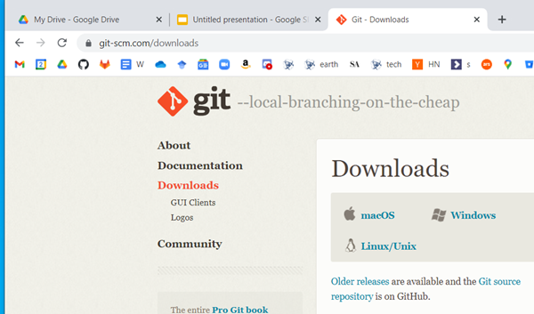
- Git vs. GitHub
- Github is a website that hosts code and connects a community of coders.
- Git is a “version control” software tool that records the history of files in a Git repository.
- Nearly every coder uses Git to push their repository of code to GitHub.
- Use the default options for everything
- Unless you REALLY know what you’re doing.
- Configure your user name via the command prompt with the following commands
git config --global user.name "John Doe"git config --global user.email johndoe@example.com
Verify Git Installation
- Open up the command prompt and type
gitto test that it’s installed- (PC) Search for
cmdin the start menu
- (PC) Search for
- This is the OG way of working on computers
- 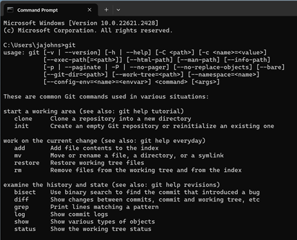
- All version control tasks can be done via git commands here, but we will be using VS Code instead
Configure Windows Explorer (optional)
- Make hidden folders visible
- Make sure file extensions are visible
- 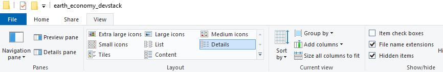
Create a python environment
Install Miniforge from https://github.com/conda-forge/miniforge?tab=readme-ov-file#miniforge3 - Be sure to select the correct version for your operating system (Windows, Mac, Linux)
- 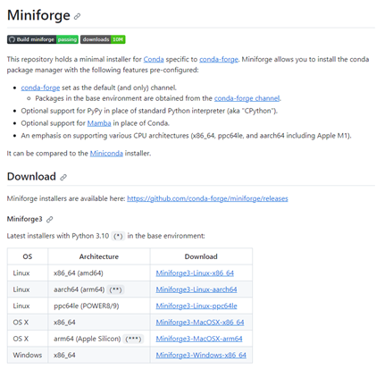
- If you have an Apple “m1 or m2” chip (a relatively new apple chip, make sure you select the Apple Silicon option).
- Install in
C:\Users\<YOUR_USERNAME>\miniforge3(PC) or~/miniconda3(Mac)- 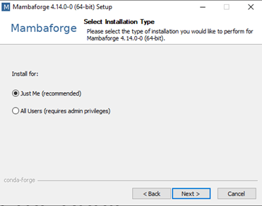
- During installation, select yes for “Add Mambaforge/Miniforge to my PATH environment Variable”
- 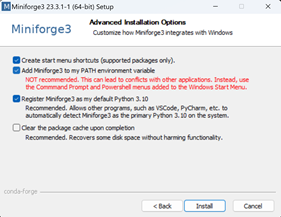
- If you get a “Windows Protected your PC”, click more info then Run Anyway.
Open the Miniforge Prompt (PC only, search for it in the start menu) or just type “mamba init” in a new terminal/command line
- 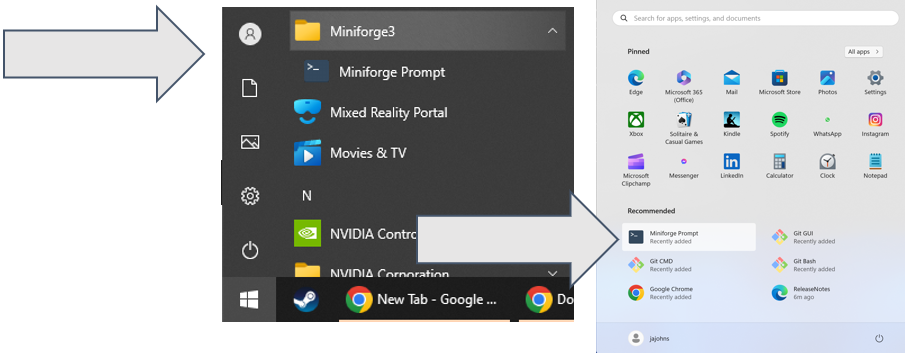
- You’ll know it worked if you see (base) in front of your path
- Base is the default “environment” that you will use.
- Create a new mamba environment with the following commands (putting your desired environment name in place of
<env_name>):
mamba create -n <env_name> -c conda-forge
- When you have lots of projects, most people create multiple environments specific to each project.
- For now, we’re going to install everything to the base environment- Activate the environment
mamba activate <env_name>
- You’ll know it worked if you see (env_name) in front of your path
- You can deactivate the environment with `conda deactivate`
- 
- You can list all environments with `conda env list`- Install libraries using the following mamba command:
mamba install -c conda-forge natcap.invest geopandas rasterstats netCDF4 cartopy xlrd markdown qtpy qtawesome plotly descartes pygeoprocessing taskgraph cython rioxarray dask google-cloud-datastore google-cloud-storage aenum anytree statsmodels openpyxl seaborn twine pyqt ipykernel imageio pandoc conda numba intake more-itertools google-api-python-client google-auth google-auth-oauthlib google-auth-httplib2 gdown tqdm sympy gekko
- If you don’t add mamba to your path, you can do this manually. On PC, you could use the command
SETX PATH "%PATH%;C:\Users\<YOUR_USERNAME>\miniforge;C:\Users\<YOUR_USERNAME>\miniforge;"
- This step may take a long time because you are downloading and installing hundreds of libraries
- 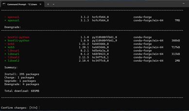
- When you’re done, it should look like the image here.
- 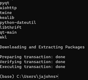
- Success! You now have a modern scientific computing environment (sometimes called a scientific computing stack) on your computer!
Clone the Earth Economy Devstack
- Create a directory for the Earth Economy Devstack at
C:\Users\<YOUR_USERNAME>\Files(PC) or~/Files(Mac)- We add a Files directory to keep the root directory clean and to make it easier to find the Earth Economy Devstack in the file explorer.
- Open a terminal or command prompt and navigate to the directory you created
- By default, your terminal will open in your user directory, so
C:\Users\<YOUR_USERNAME> - You can navigate to the directory you created with the command
cd Files- See image below.
- By default, your terminal will open in your user directory, so
- Run the git clone command to clone the Earth Economy Devstack repository
git clone https://github.com/jandrewjohnson/earth_economy_devstack- 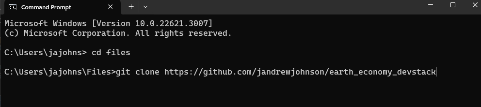
Install Visual Studio Code (VS Code)
- Install from <code.visualstudio.com/download>
- For PC, I recommend selecting the “User Installer”, 64-bit option for windows.
- 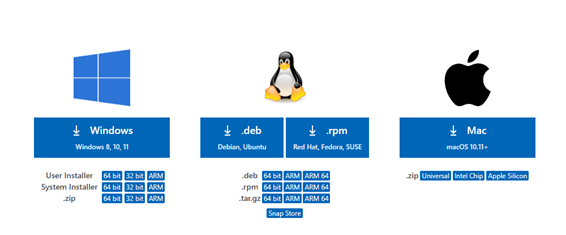
- Use the default install options with the exception of the two that start with “Add Open with Code” action…
- 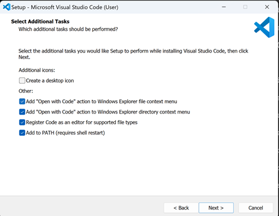
- For PC, I recommend selecting the “User Installer”, 64-bit option for windows.
- You could just open VS Code now, but we’re going to open it up with a specific Worspace Configuration file below
Open the Earth Economy Devstack in VS Code workspace
- Navigate to the directory where you cloned the Earth Economy Devstack
- In the repository, there is a file called
earth_economy_devstack.code-workspace. Launch this.- If configured correctly, the full path would be
C:\Users\<YOUR_USERNAME>\Files\earth_economy_devstack\earth_economy_devstack.code-workspace(PC) or~/Files/earth_economy_devstack/earth_economy_devstack.code-workspace(Mac)
- If configured correctly, the full path would be
- In the repository, there is a file called
- The workspace file adds a bunch of different repositories to the workspace (which you will need to git clone in to where the workspace says they should be)
- 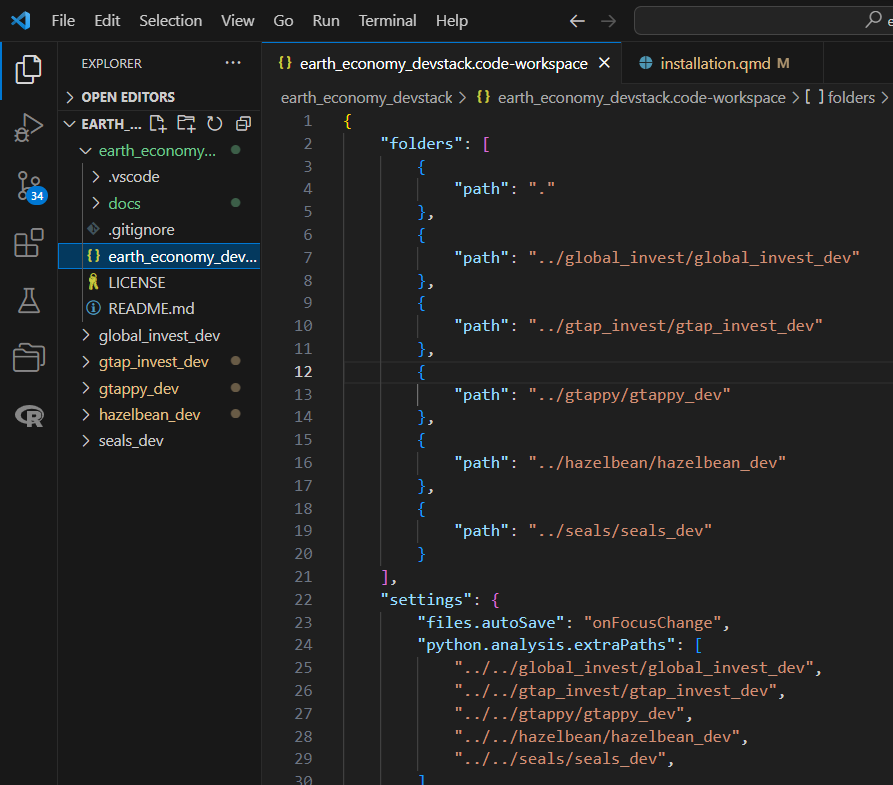
- The workspace also sets up a bunch of launch configurations for debugging and running code using the respositories in your workspace
- 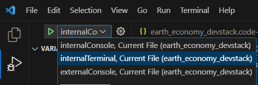
- We’ll describe debugging more in future sections
- For now, just know that these launch configurations make sure you’re using the repositories that we’ve added to your workspace
- Also note that the other repositories shown in the VS Code file explorer will be empty until you git clone them (described below)
Configure VS CODE
- Sign in to VS Code with your GitHub account
- Click on the account icon in the bottom left corner of the window and follow prompts
- Install required extensions
- Install the Python extension
- Click on the extensions icon in the left sidebar
- Search for Python and install the one by Microsoft
- 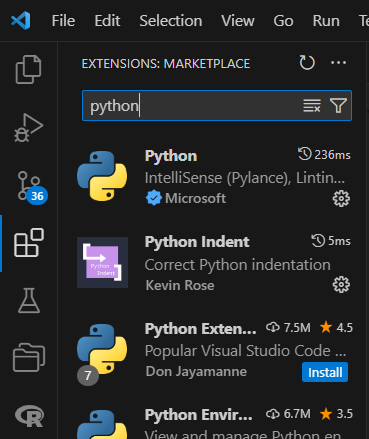
- Install Quarto extension in VS Code
- We use Quarto to create reports and documents on .qmd, .md and .ipynb files
- Install the Quarto CLI https://quarto.org/docs/get-started
- You can edit in source mode:
- 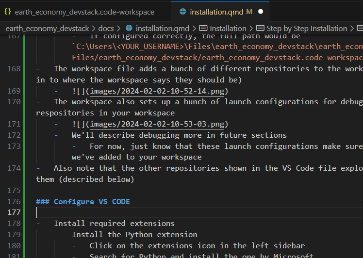
- Or you can press ctrl+shift+f4 to use the visual editor
- 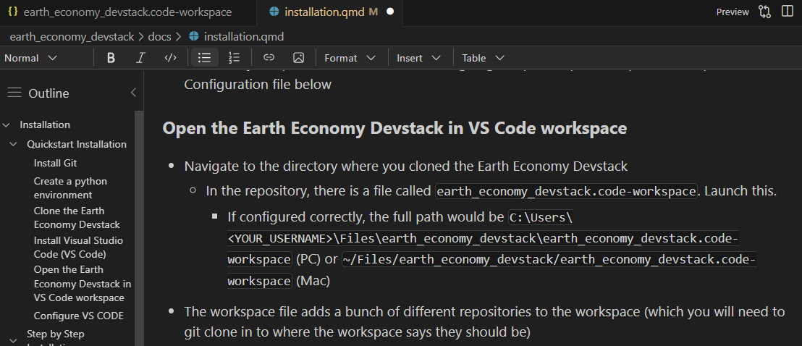
- We use Quarto to create reports and documents on .qmd, .md and .ipynb files
- Install Git Graph extension in VS Code
- Once installed, click the Git Graph button on the bottom-left status bar to see a visual representation of your git history
- 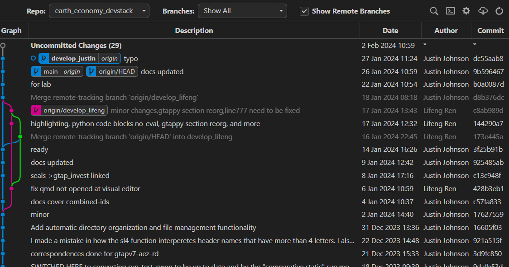
- Install the Python extension
Organize Directories for the devstack
- The Earth Economy Devstack organizes repositories in a specific way, described here.
- Recall that our workspace links to e.g. the hazelbean_dev repository, but it currently points to a directory that doesn’t yet exist.
- In our Files directory, create a directory named
hazelbean(nothazelbean_devas that will be the repository’s name)- 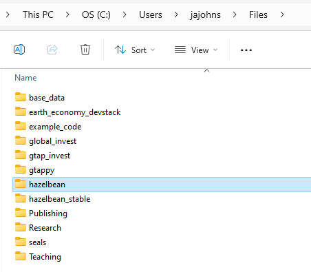
- Below, we will use git to clone the
hazelbean_devinto this directory we just created- 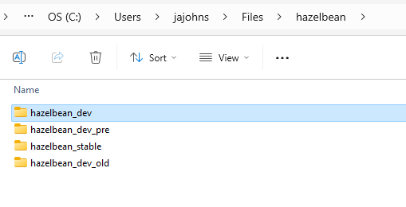
- In our Files directory, create a directory named
- Recall that our workspace links to e.g. the hazelbean_dev repository, but it currently points to a directory that doesn’t yet exist.
Clone the required repositories
- Instead of using the command line, we will use Git via VS Code’s “Command Pallate”
- The Command Pallate is accessed via
- It is a search bar that you can use to run commands in VS Code
- The Command Pallate is accessed via
- Once you’ve opened the Command Pallate, type “git clone” and it will search for the command
- 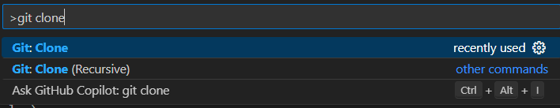
- Once you select the command, it will prompt you if you want to write in your Repo’s GitHub URL manually, or you can use VS Code to search the different repositories you have access to
- 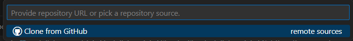
- Searching via GitHub found, for instance, NatCapTEEMs/gep repo
- 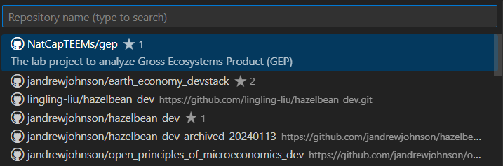
- Once you select that, it will ask you what local directory you want to clone the repository to.
- By default it assumes you want to clone it to your user directory as below
- 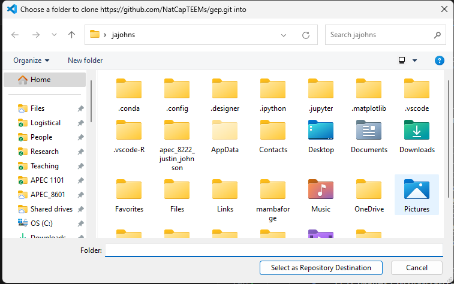
- We instead want to clone it to the
hazelbeandirectory we created earlier, which will put a new folderhazelbean_devin that directory - To do this, navigate to the hazelbean directory and select it
- 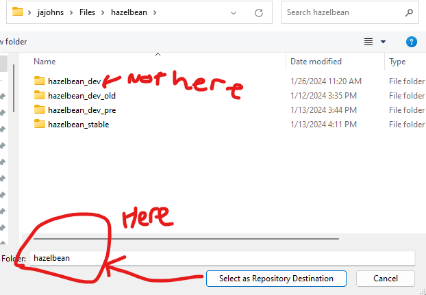
- By default it assumes you want to clone it to your user directory as below
- After you’ve cloned a repository, you can now access it in the file explorer
- 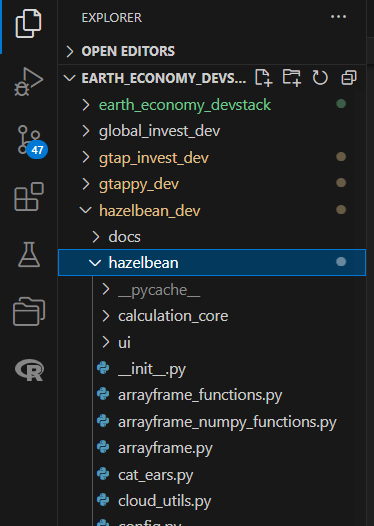
Repeat the cloning approach with all the repos you need
- If you are a member of NatCap TEEMs or the JohnsonPolaskyLab, you should have access to these repositories via our GitHub organization
- If you’re not a member, you will still be able to clone all of the public repositories (which are all documented in various journal articles)